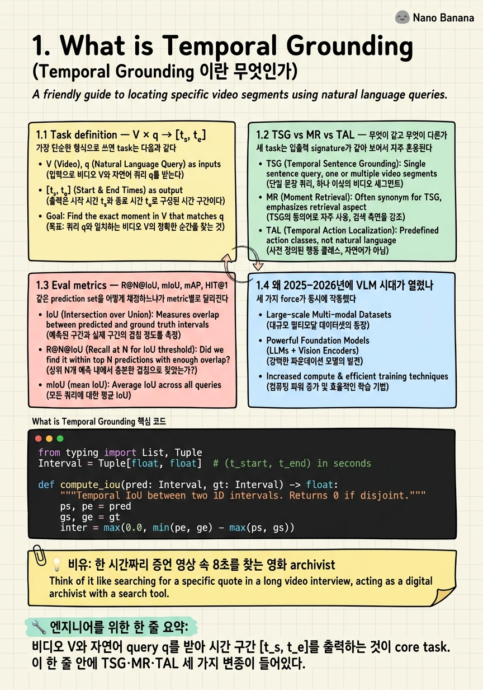

What is Temporal Grounding

🎯 학습 목표
- TSG·MR·TAL을 query 형식 기준으로 형식적으로 구분할 수 있다
- R@N@IoU{0.3,0.5,0.7}, mIoU, mAP@avg(0.5:0.05:0.95), HIT@1을 손으로 계산하고 구현할 수 있다
- 왜 2025–2026년에 VLM이 regression head를 대체했는지 Time-R1·MeCo·UniTime의 결과를 인용해 설명할 수 있다
- 본 강의 10개 chapter가 어떤 축(benchmark → DETR → VLM → RL → agentic → streaming → trust → research)을 따라가는지 머릿속에 지도를 그릴 수 있다
Chapter 1은 강의 전체의 좌표축을 깐다. 먼저 Temporal Grounding을 형식적으로 정의하고 — input은 비디오 V와 자연어 query q, output은 시간 구간 [t_s, t_e] — 이 한 정의 안에 사실은 세 개의 다른 task family가 들어있음을 본다. Temporal Sentence Grounding(TSG)은 free-form sentence를 쓰고, Moment Retrieval(MR)은 짧은 query + saliency를 함께 보고, Temporal Action Localization(TAL)은 closed-set class label을 본다. 그 다음 R@N@IoU와 mIoU, mAP, HIT@1이 같은 prediction을 어떻게 다르게 채점하는지 짚는다. 마지막으로 2025–2026년에 무엇이 바뀌었는지 — Time-R1(NeurIPS 2025), MeCo(ICLR 2026), UniTime(NeurIPS 2025), VideoMind(ICLR 2026), VideoITG(CVPR 2026), TimeLens(CVPR 2026)의 6개 main paper들이 모두 '시간을 숫자로 regression하지 말고 token으로 generate하라'는 같은 방향을 가리키는 이유를 본다. 이 chapter가 끝나면 나머지 9개 chapter가 왜 그 순서로 배열되었는지 이해할 수 있다.
핵심 내용
1.1 Task definition — V × q → [t_s, t_e]
가장 단순한 형식으로 쓰면 task는 다음과 같다. 길이 T초의 비디오 V = {f_1, f_2, ..., f_N} (N개 frame, 보통 1–2 FPS sub-sample)와 자연어 query q가 주어진다. 모델 f_θ는 시간 구간 (t_s, t_e), 0 ≤ t_s < t_e ≤ T 를 출력한다. ground truth는 인간 annotator가 표시한 (t_s*, t_e*) 한 쌍 또는 여러 쌍(disjoint moment 허용 시). 평가는 prediction과 GT의 temporal IoU = max(0, min(t_e, t_e*) − max(t_s, t_s*)) / (max(t_e, t_e*) − min(t_s, t_s*)) 로 시작한다.
2024년 이전 모델들 — 2D-TAN, M-DETR, QD-DETR, UniVTG — 은 이 출력을 두 개의 scalar regression head로 뽑았다. (center, length) 또는 (start_offset, end_offset). 2025–2026년 VLM-as-grounder는 같은 출력을 텍스트 토큰으로 emit한다. 예: 'The witness recants between 47.2 and 55.0 seconds.' Time-R1은 여기에 GRPO + verifiable tIoU reward를 붙여 zero-shot으로 Charades-STA [email protected]=78.1을 달성했다. 같은 모델이 같은 비디오와 query를 보지만, output을 숫자 vector로 만들지 token sequence로 만들지가 결정적 차이다.
1.2 TSG vs MR vs TAL — 무엇이 같고 무엇이 다른가
세 task는 입출력 signature가 같아 보여서 자주 혼용된다. 형식적 차이는 query의 형태와 보조 supervision에 있다.
- Temporal Sentence Grounding(TSG): query q가 free-form 자연어 sentence. 예: 'a man wearing a red shirt opens the refrigerator and takes out a bottle'. 대표 benchmark — Charades-STA(arXiv:1705.02101), ActivityNet-Captions(arXiv:1705.00754), TACoS, DiDeMo. Output은 single (t_s, t_e). 평균 query 길이 8–14 단어.
- Moment Retrieval(MR): query는 짧은 phrase 또는 sentence이지만 추가로 frame-level saliency score(0–4 Likert)를 함께 예측해야 한다. 한 query에 disjoint moment가 여러 개 있을 수 있다. 대표 — QVHighlights(arXiv:2107.09609), 평균 1.8 disjoint moments/query. Output은 multiple (t_s, t_e, saliency) tuple. Lighthouse(arXiv:2408.02901)가 표준 toolkit.
- Temporal Action Localization(TAL): query는 closed-set의 action class label('high jump', 'cricket bowling'). 대표 — Ego4D MQ(110개 class), THUMOS14, ActivityNet-1.3. Output은 class별로 여러 (t_s, t_e, score) — 사실상 1D object detection.
실무에서 헷갈리는 지점: ActivityNet은 같은 비디오 풀로 -Captions(TSG)와 -1.3(TAL) 두 task가 나와있다. Charades-STA는 TSG지만 backbone 비디오는 같은 Charades(action classification)다. 면접에서 'ActivityNet에서 했어요'라고 하면 어느 split을 썼는지 반드시 묻는다.
1.3 Eval metrics — R@N@IoU, mIoU, mAP, HIT@1
같은 prediction set을 어떻게 채점하느냐가 metric별로 달라진다.
- R@N@IoU=θ (Recall at N with IoU threshold θ): 모델이 top-N prediction을 내놨을 때, 그 중 적어도 하나가 GT와 IoU ≥ θ면 1, 아니면 0. 모든 query에 대해 평균. TSG의 사실상 표준. 보통 N ∈ {1, 5}, θ ∈ {0.3, 0.5, 0.7}. [email protected]은 매우 엄격(8.2초 평균 moment에서 0.7 IoU면 boundary 오차 1초 미만).
- mIoU (mean IoU): top-1 prediction과 GT의 IoU를 모든 query에 대해 산술 평균. R@N@IoU가 threshold-binarized인 반면 mIoU는 continuous. TAR-TVG(arXiv:2508.07683)이 Charades-STA mIoU=61.1로 2026 SOTA.
- mAP@avg(0.5:0.05:0.95): COCO-style. IoU threshold를 0.5부터 0.95까지 0.05 간격으로 10개 잡고 각각 mAP 계산 후 평균. MR(QVHighlights)·TAL의 표준. MeCo가 QVHighlights mAP=45.3, HIT@1=75.1로 ICLR 2026 SOTA(arXiv:2503.09027).
- HIT@1: QVHighlights 전용. Top-1 prediction window 안에 인간이 매긴 saliency score≥4 frame이 있으면 1. Saliency와 boundary를 동시에 평가.
주의 — Charades-STA에서 [email protected]는 빨리 saturate한다(2026년 70+가 흔함). 진짜 비교는 [email protected]나 mIoU에서 일어난다. ActivityNet의 평균 moment가 36초로 Charades-STA의 8.2초보다 훨씬 길어, 같은 IoU=0.5도 절대 boundary 오차가 4배 크다. metric 숫자만 보고 cross-benchmark 비교는 위험하다.
1.4 왜 2025–2026년에 VLM 시대가 열렸나
세 가지 force가 동시에 작동했다.
(1) Regression head의 정체. 2D-TAN(2020)부터 UniVTG(2023)까지 boundary regression head를 다듬는 4–5년 동안 Charades-STA [email protected]는 50%대 후반에서 60%대 초반에 정체했다. proposal-and-rank 또는 DETR query를 늘려도 비디오 길이가 길어지면 (TACoS, ActivityNet) 빠르게 무너졌다.
(2) Timestamp token이 자연스럽다. Qwen2-VL, Qwen2.5-VL 같은 Video-LLM은 이미 frame을 token으로 흡수하고 임의 텍스트를 생성한다. timestamp를 '47.2'처럼 numeric string으로 뱉는 것은 모델 입장에서 추가 head 없이 가능한 일이다. UniTime(arXiv:2506.18883)·MeCo(arXiv:2503.09027)·Universal VTG는 이 verbal generation 접근으로 regression baseline을 추월했다.
(3) RL post-training이 verifiable reward와 결합했다. Temporal grounding은 보상 함수 R(pred, gt) = tIoU(pred, gt)가 미분 없이도 정확히 계산된다. 이 verifiable nature가 GRPO(DeepSeek R1 스타일)와 완벽히 맞아떨어졌다. Time-R1(arXiv:2503.13377)은 Qwen2.5-VL-7B에 GRPO + tIoU reward + format reward만 붙여 — 단 2.5K example의 TimeRFT 데이터로 — zero-shot Charades-STA [email protected]=78.1, [email protected]=60.8, [email protected]=35.3을 찍었다. 비교 baseline: VideoChat-Flash 74.5, VideoMind 73.5, TimeSuite 69.9 ([email protected]). Fine-tune 시 Time-R1*은 Charades-STA [email protected]=72.2, [email protected]=50.1로 모든 supervised baseline 위에 섰다.
다만 한 가지 caveat — Time-R1 zero-shot이 ActivityNet [email protected]에서는 21.4로 TRACE의 24.0을 넘지 못했다. '전부 이긴다'가 아니라 '대부분 이기고, 특히 짧은 영상에서 압도적으로 이긴다'가 정확한 서술이다.
1.5 강의 forward map — 10개 chapter는 어떻게 연결되는가
이 chapter에서 깐 좌표축 위에 나머지 9개 chapter가 다음과 같이 놓인다.
- Ch.2 Benchmark Landscape & 7 Biases — Charades-STA의 'query-only baseline이 강하다'(Otani et al., arXiv:2009.00325), DiDeMo의 5초 discrete quantization, MAD의 0.06% needle-in-haystack 같은 dataset 함정을 다룬다.
- Ch.3 Pre-VLM Foundations — DETR Era — 2D-TAN, MS-2D-TAN, M-DETR, QD-DETR, CG-DETR, UniVTG. 왜 이 길이 막혔는지, 그러나 어떤 inductive bias가 VLM 시대에도 살아남았는지.
- Ch.4 VLM-as-Grounder — UniTime, MeCo, Universal VTG. timestamp token generation의 메커닉.
- Ch.5 RL Fine-tuning Era — Time-R1, TempSamp-R1(arXiv:2509.18056), VideoTemp-o3(arXiv:2602.07801), TimeLens. GRPO + verifiable reward, penalty-aware IoU, reward hacking.
- Ch.6 Agentic Search for Long-Form — VideoMind의 Chain-of-LoRA 4-role agent, AVI(arXiv:2511.14446)의 Charades-STA [email protected]=88.6, ExtremeWhenBench(arXiv:2606.12300)의 '85% failure는 search, 11%만 localization' 발견.
- Ch.7 Streaming + Online Grounding — StreamingHarness(arXiv:2606.08615), CacheFlow(arXiv:2511.13644), LiveVLM(arXiv:2505.15269).
- Ch.8 Plug-and-Play — VideoITG — VideoITG(CVPR 2026 Highlight, arXiv:2507.13353)가 왜 2026년에 유일한 plug-and-play module인가.
- Ch.9 Trust — Hallucination, Faithfulness, Abstention — CounterVid(arXiv:2601.04778), DIQ-H(arXiv:2512.03992), Step-Level Faithfulness(arXiv:2603.06828), TempCore(arXiv:2509.01167).
- Ch.10 Novel Research Directions — 12개 paper idea, dataset 가용성, compute 추정, 어디에 새 paper를 쓸 수 있는가.
핵심 진행 방향은 단순하다 — task 정의(1) → data 함정(2) → 옛 길의 종착점(3) → 새 길의 입구(4) → 새 길의 가속기(5) → 새 길이 못 가는 곳(6,7) → 부수 도구(8) → 새 길의 위험(9) → 새 paper(10).
💡 비유로 이해하기
한 명의 영화 archivist가 한 시간짜리 인터뷰 영상을 받았다. 검사가 묻는다 — '이 인터뷰의 어느 8초 동안 증인이 진술을 번복했습니까?' archivist에게 query는 짧다('진술을 번복했다'). haystack은 거대하다(3,600초의 frame). boundary는 결정적이다 — 47초가 아니라 47.2초여야 인용 가능하다. 한 시간 영상을 통째로 본 뒤 '대략 50초쯤이요'는 법정에서 쓸 수 없다.
이것이 정확히 Temporal Grounding이다. (a) query 길이의 비대칭 — input은 한 줄, output은 비디오의 0.2%에 해당하는 정확한 boundary. (b) search 문제 — 한 시간 분량을 다 봐야 한다. (c) boundary 정밀도 — 8초 moment에서 1초 boundary 오차는 IoU 0.78, 2초 오차는 IoU 0.6. IoU 0.7 이상을 요구하는 [email protected]는 사실상 사람이 보고도 헷갈리는 정밀도다.
2024년까지의 archivist(regression head 모델)는 '50초 근처'라고 숫자를 두 개 적었다. 2025–2026년의 archivist(Time-R1 같은 VLM)는 영상을 보면서 '증인이 47.2초부터 55.0초 사이에 이전 진술을 명시적으로 부정했다'고 문장으로 말한다. 같은 사건을 본다. 표현만 다르다. 그런데 그 표현 차이가 R@N@IoU를 3.6%p 끌어올렸다(VideoChat-Flash 74.5 → Time-R1 78.1, Charades-STA [email protected]).
💻 코드 예시
Temporal IoU와 R@N@IoU의 정확한 정의를 코드로 박아두는 것이 첫째 과제다. 면접에서 'R@1@IoU=0.5와 mIoU 중 어느 것이 낮으면 더 나쁜 모델인가요?'를 물으면 의외로 답을 못 한다. 코드를 손으로 쓸 수 있으면 그런 질문이 사라진다. 아래 구현은 numpy도 쓰지 않는 순수 Python 35줄로, 평균적인 grounding 모델이 3개 query에 대해 top-2 prediction을 냈다고 가정하고 [email protected], [email protected], mIoU를 계산한다.
from typing import List, Tuple
Interval = Tuple[float, float] # (t_start, t_end) in seconds
def compute_iou(pred: Interval, gt: Interval) -> float:
"""Temporal IoU between two 1D intervals. Returns 0 if disjoint."""
ps, pe = pred
gs, ge = gt
inter = max(0.0, min(pe, ge) - max(ps, gs))
union = max(pe, ge) - min(ps, gs)
return inter / union if union > 0 else 0.0
def recall_at_n_iou(predictions: List[List[Interval]],
ground_truths: List[Interval],
n: int = 1,
iou_threshold: float = 0.5) -> float:
"""R@N@IoU=theta. predictions[i] is the ranked top-K list for query i."""
assert len(predictions) == len(ground_truths)
hits = 0
for preds, gt in zip(predictions, ground_truths):
top_n = preds[:n]
if any(compute_iou(p, gt) >= iou_threshold for p in top_n):
hits += 1
return hits / len(ground_truths)
def mean_iou(predictions: List[List[Interval]],
ground_truths: List[Interval]) -> float:
"""mIoU on top-1 prediction."""
return sum(compute_iou(p[0], g) for p, g in zip(predictions, ground_truths)) / len(ground_truths)
if __name__ == "__main__":
# 3 queries, each with top-2 predictions (ranked). GT in seconds.
preds = [
[(10.0, 15.0), (8.0, 14.0)], # close to GT (10, 16)
[(2.0, 30.0), (5.0, 9.0)], # top-1 too wide; top-2 tight
[(45.0, 55.0), (60.0, 70.0)], # both miss GT (20, 28)
]
gts = [(10.0, 16.0), (5.0, 10.0), (20.0, 28.0)]
print(f"[email protected] = {recall_at_n_iou(preds, gts, n=1, iou_threshold=0.5):.3f}")
print(f"[email protected] = {recall_at_n_iou(preds, gts, n=1, iou_threshold=0.7):.3f}")
print(f"[email protected] = {recall_at_n_iou(preds, gts, n=5, iou_threshold=0.5):.3f}")
print(f"mIoU = {mean_iou(preds, gts):.3f}")
# Expected: R1@.5=0.333, R1@.7=0.333, R5@.5=0.667, mIoU=0.279compute_iou는 1D interval에 대한 표준 IoU. union = 0 (즉 두 interval이 모두 single point이고 같은 위치) edge case에서 0을 반환하도록 가드를 둔다. recall_at_n_iou는 query별로 top-N prediction을 보고 그 중 하나라도 IoU≥threshold면 hit. 이게 query 하나에 대해 0/1이라는 점이 중요하다 — top-5 안에 6개가 맞아도 1점, 1개만 맞아도 1점. mean_iou는 top-1만 본다(상대적으로 점수가 부드럽다).
실행 결과의 해석: query 1은 top-1이 (10,15) vs GT (10,16) → IoU = 5/6 ≈ 0.833 → [email protected]와 [email protected] 모두 hit. query 2는 top-1 (2,30) vs (5,10) → IoU = 5/28 ≈ 0.179 → miss. top-2 (5,9) vs (5,10) → IoU = 4/5 = 0.8 → R@5에는 잡힘. query 3은 둘 다 GT와 disjoint → miss. 그래서 [email protected]=1/3, [email protected]=1/3, [email protected]=2/3, mIoU=(0.833+0.179+0.0)/3=0.337. 핵심은 R@N과 mIoU가 다른 신호를 잡는다는 것 — R@N은 'top-K 안에 정답이 있나'(retrieval-style), mIoU는 'top-1이 평균적으로 얼마나 가까운가'(regression-style). 한 metric에서 좋고 다른 metric에서 나쁜 모델은 흔하다.
🏭 현업에서의 평가
✅ 시니어가 보는 것
- TSG/MR/TAL을 query 형태(free-form sentence vs short query + saliency vs class label)와 대표 benchmark(Charades-STA vs QVHighlights vs Ego4D MQ)로 즉시 구분할 수 있다
- R@N@IoU의 정의를 칠판에 적을 때 'top-N 중 하나라도 IoU≥θ면 hit'을 정확히 말한다 (top-N이 다 맞아야 한다고 잘못 말하는 후보가 흔하다)
- ActivityNet vs Charades-STA의 평균 moment 길이 차이(36s vs 8.2s)와 그것이 같은 IoU 점수의 절대 boundary 오차에 미치는 영향을 안다
- Time-R1이 zero-shot으로 SFT baseline을 넘었다는 사실(78.1 vs 74.5)을 paper(arXiv:2503.13377)와 함께 인용한다
- regression head → token generation 전환의 underlying enabler가 verifiable reward + GRPO라는 것을 안다
- Charades-STA의 query-only baseline 문제(Otani et al., arXiv:2009.00325)를 알고 있어 SOTA 숫자를 무비판적으로 인용하지 않는다
⚠️ 레드 플래그
- TSG와 TAL을 혼용하거나 'temporal grounding = action localization'이라고 단순화한다
- R@N@IoU에서 N을 IoU threshold와 혼동한다
- '2024년 SOTA는 M-DETR/QD-DETR이고 2026년도 그렇다'고 답한다(VLM 전환을 모르는 표시)
- ActivityNet에서 했다고 말하지만 -Captions(TSG)인지 -1.3(TAL)인지 구분을 못 한다
- mIoU와 mAP의 차이를 '평균이냐 mean Average냐' 정도로 얼버무린다
- Charades-STA [email protected]=80+를 '거의 풀린 문제'라고 말한다 ([email protected]와 OOD split에서 무너진다는 사실을 모름)
🎤 예상 인터뷰 질문
- Q1. 같은 비디오에서 모델 A는 R@1@IoU=0.5가 75%이고 mIoU는 0.42, 모델 B는 R@1@IoU=0.5가 65%이지만 mIoU는 0.55입니다. 둘 중 어느 모델을 production에 배포하시겠습니까? 그리고 그 이유와, 이 prediction 분포를 보고 각 모델이 무엇을 잘못 학습한 것 같은지 가설을 세워주세요.
- Q2. Time-R1(arXiv:2503.13377)이 Qwen2.5-VL-7B + GRPO + verifiable tIoU reward만으로 zero-shot Charades-STA [email protected]=78.1을 찍었습니다. 같은 backbone을 cross-entropy로 SFT한 것보다 RL post-training이 왜 더 좋다고 생각하십니까? 그리고 이 접근이 ActivityNet의 긴 video나 MAD의 영화 길이 video에는 그대로 작동하지 않는 이유는 무엇입니까?
- Q3. 면접관 영상이 1시간짜리이고 query가 '면접자가 처음으로 본인 약점을 인정한 순간'이라고 합시다. 이걸 single forward pass의 Video-LLM으로 풀려고 시도하면 어떤 failure mode가 나옵니까? 그리고 이걸 어떻게 system-level architecture로 우회하시겠습니까?
✨ 핵심 요약
Task는 V × q → [t_s, t_e]
비디오 V와 자연어 query q를 받아 시간 구간 [t_s, t_e]를 출력하는 것이 core task. 이 한 줄 안에 TSG·MR·TAL 세 가지 변종이 들어있다.
TSG/MR/TAL은 query 형태로 갈린다
TSG = free-form sentence (Charades-STA), MR = short query + saliency, disjoint moments (QVHighlights), TAL = closed-set class label (Ego4D MQ, ActivityNet-1.3). ActivityNet-Captions(TSG)와 ActivityNet-1.3(TAL)이 다른 task라는 점이 함정.
R@N@IoU는 top-N 중 하나라도 맞으면 hit
R@N@IoU=θ는 top-N prediction 중 적어도 하나가 GT와 IoU≥θ인 query의 비율. mIoU는 top-1의 continuous 평균으로 다른 신호를 잡는다.
Cross-benchmark 숫자 비교는 위험
Charades-STA 평균 moment 8.2초, ActivityNet 36초, MAD 4.1초. 같은 IoU=0.5도 절대 boundary 오차가 4–9배 차이. query-only baseline bias (Otani et al., arXiv:2009.00325)도 주의.
VLM이 regression head를 대체했다
2025–2026년 main paper 6개(Time-R1, MeCo, UniTime, VideoMind, VideoITG, TimeLens)가 모두 VLM 기반. Time-R1(arXiv:2503.13377) zero-shot Charades-STA [email protected]=78.1 > SFT baseline VideoChat-Flash 74.5가 상징적 사건.
Verifiable reward + GRPO가 핵심 가속기
tIoU는 미분 없이도 정확히 계산되는 verifiable reward라서 RL post-training과 완벽히 맞아떨어졌다. Time-R1은 단 2.5K example로 zero-shot SOTA를 만들었다.
Hour-scale은 다른 task다
Charades-STA SOTA가 88점이어도 ExtremeWhenBench(arXiv:2606.12300)에서 Qwen3.5-9B는 mIoU 0.110. CLIP-only baseline 0.269, retrieve-then-ground hybrid 0.354. 85% failure는 search.
Chapter 1은 좌표축, 나머지 9개는 그 위의 좌표
Ch.2 benchmark/bias → Ch.3 DETR era → Ch.4 VLM grounder → Ch.5 RL → Ch.6 agentic → Ch.7 streaming → Ch.8 plug-and-play → Ch.9 trust → Ch.10 새 research idea.